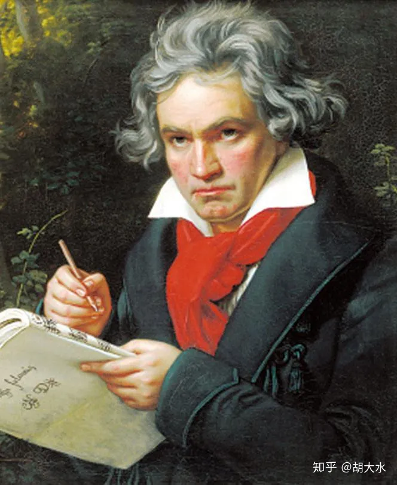

海顿

路德维希·凡·贝多芬（Ludwig van Beethoven，1770—1827），德国作曲家。
在贝多芬的的音乐创作中，既体现出了对古典主义时期音乐的的继承，同时也能看到对传统创作思维的突破，体现了一代音乐大师的创作风范。
贝多芬的一生可以分为四个时期：
一、波恩时期（1770—1792）
贝多芬在1770年出生在德国波恩。贝多芬的祖父和他爸都是波恩选帝侯宫廷的乐师，祖父在当时宫廷混的还不错，但到了他爸这就开始不行了，他爸爱喝酒脾气大，非常粗暴，这样的爸爸就让整个家庭过得不是太好。贝多芬他爸从小教贝多芬音乐，处于贫困中的贝多芬他爸想了一个发财致富的好办法：“要是能把贝多芬能成为‘第二个莫扎特’，那自己不就名利双收了嘛！真是太好了”。于是，他开始更加细心的教导自己的贝多芬，想要努力把贝多芬培养成为一个“神童”，甚至听说还曾经偷偷给贝多芬在“身份证”上改小了年龄。
但随着贝多芬不断的长大，贝多芬他爸发现儿子并没有自己想象的那么“有天赋”，于是又开始变得粗暴，经常打骂贝多芬，贝多芬最后实在是挺不住了，贝多芬就跟他爸说：“爸，你也别打我了，我不想学音乐了，我想去卖面包”。由此，他爸在他妈的劝说下，决定给贝多芬换一个老师，贝多芬终于不用再和他爸学了。
在1778年，8岁的贝多芬开始和他祖父的一个朋友——宫廷管风琴师海因里希·范·艾顿学习音乐，艾顿是一个老头，非常慈祥，教给贝多芬很多钢琴技术。艾顿虽然教的整体还不错，但因为年龄大了，也会有一些问题，就是他的教学思想相对保守，而且也不愿意教贝多芬比较感兴趣的管风琴。期间贝多芬也和别的老师学了一些东西，比如管风琴、小提琴、中提琴、男高音、双簧管等。这一时期，他爸好像慢慢明白了，其实不是自己儿子没天赋，是之前自己水平不行，他现在慢慢看出来贝多芬好像“有天赋”了。于是，想给贝多芬换老师。
在1781年，贝多芬换了一个老师。他的新老师是在波恩当时最好的老师，宫廷管风琴手艾登的继承人，波恩国立歌剧院的作曲家——克里斯蒂安·格特劳勃·尼夫（Christian Gottlob Neefe），年仅31岁，在音乐界很有名气。尼夫上第一次给贝多芬上课时就看出了贝多芬的天赋，并且认为之前的老师都是“辣鸡”，这么好的苗子都没教好（贝多芬他爸害羞的低下了头）。此后，尼夫开始系统的教导贝多芬，尼夫在教贝多芬钢琴的同时，也系统的教贝多芬理论知识。尼夫在教了贝多芬一阵之后，公开表示“他一定会成为第二个莫扎特”，足以看出对贝多芬的喜欢。
值得注意的是，尼夫非常喜欢巴赫的《平均律曲集》，他经常辅导贝多芬演奏巴赫平均律，这让贝多芬对巴洛克时期的音乐有了基础。在1782年，贝多芬已经可以代替了尼夫在宫廷演奏管风琴了。在1784年，14岁的贝多芬基本在演奏技术上可以与尼夫达到相当的水准，并与尼夫进行着同样的工作。又和尼夫学了几年作曲后，尼夫基本上没有什么可以交给贝多芬的了。在当时的波恩，已经没有再厉害的老师了，贝多芬的学习遇到了瓶颈。
在1787年，贝多芬在17岁的时候曾去过一次维也纳，专门拜访莫扎特。贝多芬想让莫扎特指点一下自己的演奏，但第一次演奏“掉链子”了，莫扎特客气的夸奖了之后，贝多芬表示不服，提出可以再即兴来一段，于是他把莫扎特《唐·乔万尼》中的片段作为主题，进行了即兴的演奏，当场得到了莫扎特的认可，莫扎特同旁边的人讲：“这个小孩以后大有作为，可能会震动世界。”此后，贝多芬成了莫扎特的“迷弟”，他后来公开表示莫扎特的音乐是“最伟大的”，他认为自己是莫扎特最大的“粉丝”，“莫扎特用脚作的曲子都比我强。”
在1789年，法国大革命把启蒙运动推向高潮，贝多芬正好在这一年进入波恩大学，接受了启蒙思想的精神。在这样的教育下，使得贝多芬对“革命”与“突破”有了很大的兴趣。在1790年12月，海顿来到了波恩，海顿在这一期间是刚从埃斯特哈齐家族“离职”，从维也纳去伦敦，经过波恩，但当时和贝多芬见没见着还不好说。在1792年，海顿又一次来波恩，这一次海顿是从伦敦回到维也纳，又路过波恩，这一次他和贝多芬见到了。
在1792年7月，尼夫告诉贝多芬海顿来波恩的消息，并且带他来到了海顿的住处。海顿见到贝多芬问了一个非常“扎心”的问题：“你现在在作曲上有什么积累和成就？”贝多芬说：“我现在还真就没啥积累，尼夫老师说他已经在作曲上没什么教给我的了，我自己也不知道咋提高了”。海顿当场就说：“跟我到维也纳去吧，我当你的老师。”
波恩时期的贝多芬对作曲还处于学习和探索之中，所以这一时期的音乐创作比较少，且均为习作性质的作品
二、第一成熟期（1792—1802）
1792年，22岁的贝多芬，为了音乐，第一次离开了自己的家乡波恩，来到了维也纳。在贝多芬到维也纳的1个月后，贝多芬的爸爸去世了，但贝多芬并没回去，可见贝多芬对他爸是多么恨他爸。能和海顿大师学习，是贝多芬的荣幸，但在与海顿的学习中，贝多芬却感到不是很愉悦。海顿在教贝多芬的时候，更多的是教贝多芬一些基础知识，这让贝多芬觉得很枯燥，同时海顿在作曲中强调要“服从规则”，这对接受了“启蒙思想”的贝多芬来说是很难接受的。
贝多芬与海顿在观念上的矛盾在一次小的争吵中升级，贝多芬提出离开。离开海顿的贝多芬又和维也纳的一些其他作曲家学习了作曲，也有了一些进步。期间，贝多芬在维也纳还需要解决经济问题，他先后服务于多个贵族，把自己的作品献给贵族们换取工资，所以我们经常可以看到在贝多芬这一时期的作品中，有献给各种贵族的作品。与此同时，贝多芬也靠教学生或开音乐会赚钱。
在1795年以后，随着贝多芬作曲技术和音乐理解的不断成熟，贝多芬的音乐创作明显增多，在这些创作中逐渐形成了自己音乐的基本风格。在1796年开始，26岁的贝多芬耳朵开始出现耳鸣的症状。1798年，贝多芬作为“市民代表”和“法国驻维也纳使馆”的“大佬”会面（当时的背景是拿破仑的法兰西帝国把奥地利帝国打败了，法兰西得在奥地利首都维也纳设立一个使馆），在期间接触到了“大佬”的辅助罗多尔弗·克罗采，这个人是一个小提琴手，也是个作曲家，克罗采跟贝多芬讲，他们之前打完胜仗都是要有庆祝胜利的音乐的，并且给贝多芬看了一些。贝多芬看了非常激动，他见到了真正“革命”的音乐。
在一年后，他还特地将克罗采《序曲》的材料，融入到他的《第一交响曲》的第一乐章中，以表示对“革命”的尊重。在1799年，29岁的贝多芬出现了第一次失聪。1800年，贝多芬完成了首次个人音乐会的同时，也开始教一个学生叫卡尔·车尔尼。在1801年听觉大大衰退，出现耳聋的症状。1801年，他在给他的好基友魏格勒的信中写道了我们后来知道的名人名言：“我要扼住生命的喉咙，要我向他弯腰，这是不可能的。”
在这一时期，贝多芬早期的创作体现出海顿的影响，比如他比较早的前三首奏鸣曲（Op.2，No.1—3）和弦乐四重奏Op.18等作品都能看出海顿的音乐风格。但在之后的创作，逐渐可以看出贝多芬对“革命”精神的向往，以及在音乐上的探索和尝试，特别是他的《第一交响曲》、《第二交响曲》、《“悲怆”奏鸣曲》等作品中尤其体现了这些特点。这一时期比较有代表性的体裁包括交响曲、钢琴奏鸣曲、钢琴协奏曲、室内乐作品等。
交响曲
贝多芬：《C大调第一交响曲》（Op.21），1799—1800；1800
贝多芬：《D大调第二交响曲》（Op.36），1801—1802；1803
奏鸣曲
贝多芬：《f小调第一钢琴奏鸣曲》（Op.2，No.1），1794—1795
贝多芬：《♯c小调第十四“月光”钢琴奏鸣曲》（Op.27，No.2），1801
钢琴协奏曲
贝多芬：《♭B大调第二钢琴协奏曲》（Op.19），c1788，rev.1794—1795，1798
室内乐
贝多芬：弦乐四重奏（Op.18，No.1—6），1798—1800
贝多芬：《钢琴三重奏》（Op.1，No.1），1794—1795
三、第二成熟期（1802—1812）
1802年，贝多芬写下了海利根施塔特遗嘱，很多资料依据这个依据这个遗嘱认为贝多芬是一个很脆弱的人，想要自杀。但事实上贝多芬当时并不想死，因为在这份“遗嘱”中，贝多芬自己也提到了“在我还没有完成交给我的全部使命之前，就离开这个世界，这简直是不可能的。”并且事实证明，贝多芬在写完了这份遗嘱之后，又活了20多年，这份“遗嘱”是在他死后才发现的，所以目前可以认为这个“遗嘱”是贝多芬当时自己写的一段“小作文”。
1803年，贝多芬完成了他的《“英雄”交响曲》，这部作品是贝多芬受到法国大革命的激励而写的，最初是为拿破仑·波拿巴而作的，但因为拿破仑称帝了，贝多芬将题目改了，改为“英雄交响曲”。从《“英雄”交响曲》可以看出，贝多芬的音乐内涵更加深刻了，他似乎开始更加向往“革命”精神了。在1804年—1805年，他创作了歌剧《莱奥诺拉》，这部歌剧是一部与“革命”有关的作品，作品的情节取材于一个历史事件，主要内容讲的是一个妻子女扮男装救丈夫“越狱”的故事。在1805—1806年，这部歌剧又被改了第二版，贝多芬期望通过这部歌剧来实现自己的音乐观念，但失败了。这部歌剧在当时反响很一般，失败后贝多芬非常伤心，就到朋友家里调整心态连着散心，顺手创作了《第四交响曲》和《第五交响曲》。
在此后的一段时间里，让贝多芬恢复了心态的是他和特蕾莎的爱情。特蕾莎·布鲁斯维克是贝多芬众多女朋友中比较喜欢的一个，虽然她是一个寡妇，但贝多芬仍然相信她是一个好女孩。贝多芬为特蕾莎免费上钢琴课，《致爱丽丝》就是贝多芬写给这个女孩的，《“热情”奏鸣曲》是贝多芬写给女孩他哥的。但俩人在1810年闹掰了，特蕾莎和别人结婚了。但贝多芬也没闲着，接着又联系上一个女孩——柏蒂娜·布伦塔诺，这个女孩是一个名媛，认识很多名人，她还帮贝多芬和歌德联系上了。
要知道，贝多芬以前经常拿歌德的词创作歌曲送给女孩子，贝多芬可太喜欢歌德了。但在贝多芬真正认识歌德之后，贝多芬开始有点讨厌歌德了，为啥呢，因为有一次，贝多芬和歌德一起在路上走，歌德看到贵族之后就变成了“舔狗”，这让贝多芬很瞧不起。后来贝多芬和歌德也不怎么联系了，可见贝多芬还是比较“刚”的。
在1811—1812年期间，贝多芬创作了《第七交响曲》和《第八交响曲》，这两部交响曲标志着贝多芬在这一阶段音乐创作的最高标准，同时也意味着贝多芬的音乐创作风格完全成熟。但达到高标准的同时也带来一个问题，就是如何达到更高的标准，在之后的时间里，贝多芬一直在探索着这个问题。
交响曲
贝多芬：《♭E大调第三“英雄”交响曲》（Op.55），1803；1805
贝多芬：《♭B大调第四交响曲》（Op.60），1806；1807
奏鸣曲
贝多芬：《G大调第十六钢琴奏鸣曲》（Op.31，No.1），1802
贝多芬：《d小调第十七“暴风雨”钢琴奏鸣曲》（Op.31，No.2），1802
钢琴协奏曲
贝多芬：《G大调第四钢琴协奏曲》（Op.58），1804—1806/1807
贝多芬：《♭E大调第五“皇帝”钢琴协奏曲》（Op.73），1809
室内乐
贝多芬：《Three String Quartets ‘Rasumovsky’》（Op.59，No.1—3），1806
钢琴作品
四、最后的成熟期（1813—1827）
在1814年维也纳会议期间，贝多芬多次参与官方音乐活动的指挥和演出，他受到了欧洲亲王贵族的敬意，成为官方推崇的音乐家。贝多芬之前失败的歌剧《莱奥诺拉》改名为《费德里奥》经过改编后重新上演，获得了成功！但好景不长，在1815年，45岁的贝多芬出现了重大危机，他的赞助人们在这一年相继去世，他的年薪，没了！！这对一个音乐家来说是很严重的一件事，他之前之所以可以相对舒适的创作音乐，是因为有人每年给他工资，但是现在这些工资没有了，对他的生活和创作来讲，影响是非常大的。贝多芬是这样描述当时的生活的：“我几乎沦为乞丐，而我又不得显露出一副不差钱的样子。”
不巧的是，在这一时期，意大利风格开始盛行，人们似乎有点听腻了贝多芬热烈、深刻的音乐风格，大家开始喜欢罗西尼清新灵动的风格了。在这一时期贝多芬耳朵完全聋了，他得靠笔记本与人沟通。贝多芬家里亲戚也有很多烦心事，都得贝多芬亲自去处理。所有的这些使得贝多芬的脾气越来也不好，身边的人都被他气走了，他自己描述自己的境遇是：“我什么朋友也没有，我在世界上是孤独一人。”这一时期的贝多芬，真的是有点可怜了。
1816年，贝多芬创作了声乐套曲《致远方的爱人》，这似乎可以说是西方音乐历史上第一套声乐套曲，表达了贝多芬对理想爱人的向往，这也许是终身未婚的贝多芬最后对爱情的一点追求。
在1819年，贝多芬开始为自己的学生兼赞助人鲁道夫大公创作《庄严弥撒》，这部作品创作了4年，直至1823年才写完，1824年首演。贝多芬自己认为它是自己最好的作品，在这部作品中，能够看出亨德尔的合唱写作技术，也能看出受到了海顿弥撒音乐的影响。
在1822—1824年，贝多芬创作了《第九交响曲》，这部作品是他人生的最后一部交响曲，作品的内涵极为深刻，贝多芬在这部作品中想要表达的是“全世界的人们都是一家人”，有点现在“人类命运共同体”的感觉。值得注意的是，很多资料里写道《第九交响曲》的创新之处就是在于在交响乐中加入了“合唱”，但其实这并不是首次，贝多芬在1808年的《C大调合唱幻想曲》中，就已经加入了“合唱”，而且从旋律来看，还和《第九交响曲》有一点像，所以有人把它称为“小贝九”。
贝多芬人生的最后一部作品是《F大调弦乐四重奏》（Op.135），包括之前的Op.127、Op.131、Op.130、Op.132，这些都是贝多芬弦乐四重奏的“大成之作”。
贝多芬，于1827年逝世。
在贝多芬最后一个时期的创作中，可以看出他对巴洛克时期音乐以及海顿、莫扎特音乐的寻找，在更加强调个人情感的抒发的同时，也赋予了音乐作品更深刻的思想深意。这一时期的作品创作体裁相对丰富。
交响乐
贝多芬：《第九交响曲》（Op.125），1822—1824；1824
管弦乐
贝多芬：《c小调合唱幻想曲》（Op.80），1808，rev.1809
钢琴奏鸣曲
贝多芬：《e小调第二十七钢琴奏鸣曲》（Op.90），1814
贝多芬：《A大调第二十八钢琴奏鸣曲》（Op.101），1816
歌剧
艺术歌曲
贝多芬：声乐套曲《至远方的爱人》（6首）（Op.98），1816
弥撒
贝多芬：《D大调庄严弥撒》（Op.123），1819—1823
变奏曲
贝多芬：《迪亚贝利变奏曲》（Op.120），1819，1823
室内乐
目前的资料里形容贝多芬最俗也是最贴切的一句话就是：“集古典主义音乐之大成，开浪漫主义音乐之先河”。贝多芬的作曲技术以及创作构思在一定程度上超越了海顿、莫扎特这两位古典主义大师，他在超越前辈的同时，贝多芬也在不断超越自己。从贝多芬人生最后的创作中可以看出，他的音乐更加强调个人情感，同时也在传达自己的崇高理想与追求。贝多芬开创了西方音乐历史一个全新的时代，后来的作曲家们都在为能够超越贝多芬而不断突破。
原文来自知乎用户：胡大水